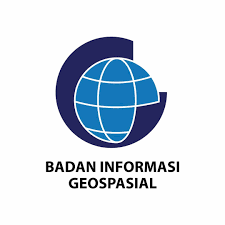
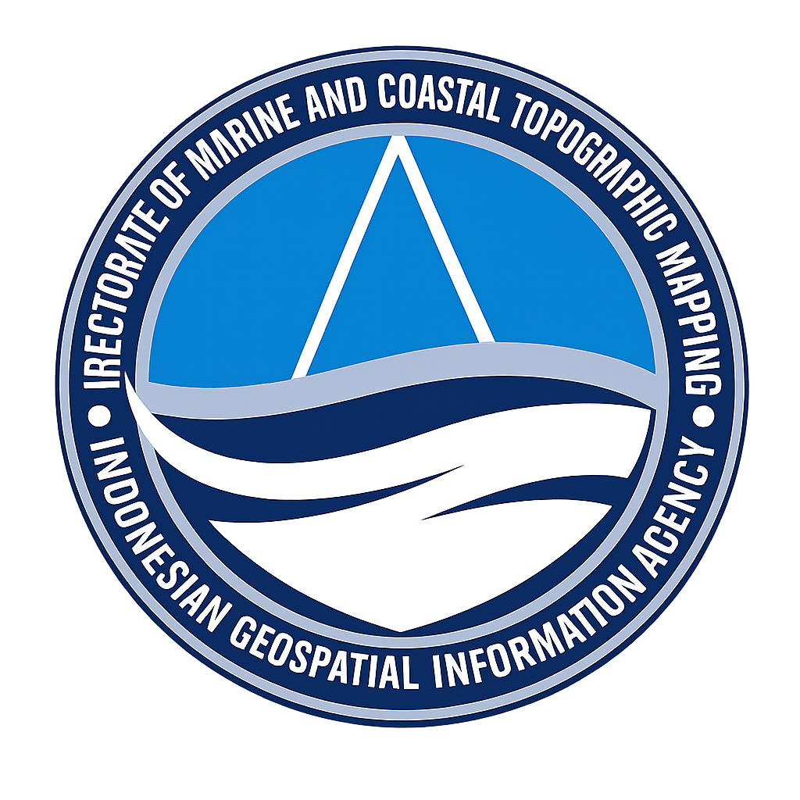

WebGIS Coastline Internship Project





WebGIS ini merupakan salah satu luaran dari kegiatan magang tahun 2026 yang dilaksanakan di Badan Informasi Geospasial (BIG), khususnya pada Direktorat Pemetaan Rupabumi Wilayah Laut dan Pesisir Pantai (DPRWLP). WebGIS dikembangkan sebagai media visualisasi dan penyajian informasi geospasial berbasis web yang menampilkan hasil pekerjaan mahasiswa selama pelaksanaan magang. Melalui WebGIS ini, kelompok dapat menampilkan berbagai informasi spasial yang berkaitan dengan kegiatan pemutakhiran data geospasial wilayah laut dan pesisir.
Mitra magang dalam kegiatan ini adalah Badan Informasi Geospasial (BIG), yang merupakan lembaga pemerintah non-kementerian yang bertanggung jawab dalam penyelenggualan informasi geospasial di Indonesia. BIG beralamat di Jalan Raya Jakarta Bogor, Cibinong, Kabupaten Bogor, Jawa Barat, yang menjadi pusat kegiatan pengelolaan dan pengembangan data geospasial nasional. Layanan utama yang diberikan oleh BIG meliputi penyediaan peta dasar, data geospasial tematik, layanan pemetaan, serta pengembangan sistem informasi geospasial berbasis teknologi terkini. Selain itu, BIG juga berperan dalam standardisasi, pembinaan, dan koordinasi penyelenggaraan informasi geospasial di Indonesia.
Sistem Informasi Geografis (SPIG) merupakan program studi jenjang Diploma IV (D4) yang berfokus pada pengembangan ilmu dan teknologi geospasial berbasis sistem informasi. SPIG dirancang untuk menghasilkan lulusan yang memiliki kompetensi akademik dan keterampilan terapan di bidang pengelolaan data spasial, analisis keruangan, pemetaan digital, serta pengembangan teknologi geospasial berbasis komputer. Sebagai program studi vokasi, SPIG menekankan keseimbangan antara teori dan praktik sehingga mahasiswa tidak hanya memahami konsep, tetapi juga mampu mengimplementasikan teknologi geospasial secara langsung di dunia kerja.
Dalam kegiatan pemutakhiran garis pantai dan data pulau, sumber data citra yang digunakan berasal dari basemap imagery berupa Google Maps Satellite dan ESRI World Imagery. Basemap tersebut dimanfaatkan sebagai referensi visual utama dalam proses interpretasi spasial, deliniasi, serta pemutakhiran data geospasial. Berikut merupakan sistem referensi yang digunakan oleh kedua basemap tersebut :
WebGIS ini merupakan salah satu hasil luaran kegiatan magang di Badan Informasi Geospasial, khususnya pada Direktorat Pemetaan Rupabumi Wilayah Pesisir dan Laut (DPRWLP). WebGIS ini dikembangkan sebagai media visualisasi dan penyajian informasi geospasial garis pantai secara interaktif guna mendukung pemahaman serta pengelolaan wilayah pesisir.
WebGIS ini menyediakan data garis pantai indikasi pasang tertinggi yang merupakan garis pantai yang ditentukan berdasarkan indikasi kedudukan muka laut pada saat pasang tertinggi melalui interpretasi citra tegak resolusi tinggi, foto udara, dan/atau data geospasial lainnya. Data ini digunakan sebagai representasi batas daratan dan perairan pada kondisi pasang tertinggi untuk mendukung kebutuhan pemetaan wilayah pesisir.
WebGIS ini disusun sebagai bagian dari output kegiatan magang dan bertujuan untuk mendukung proses pembelajaran, eksplorasi, serta visualisasi data geospasial. Informasi yang ditampilkan masih bersifat pengembangan dan tidak dimaksudkan sebagai produk resmi institusi.